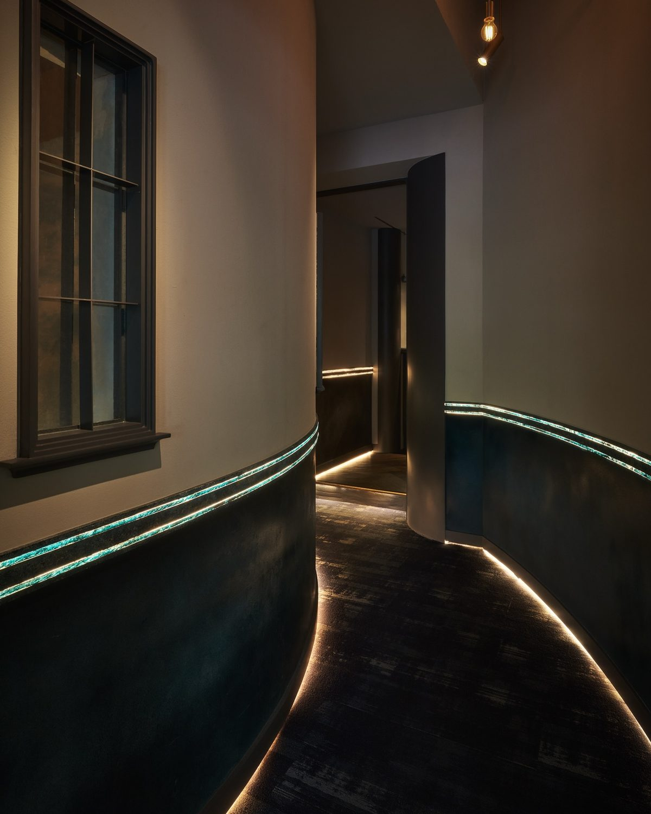
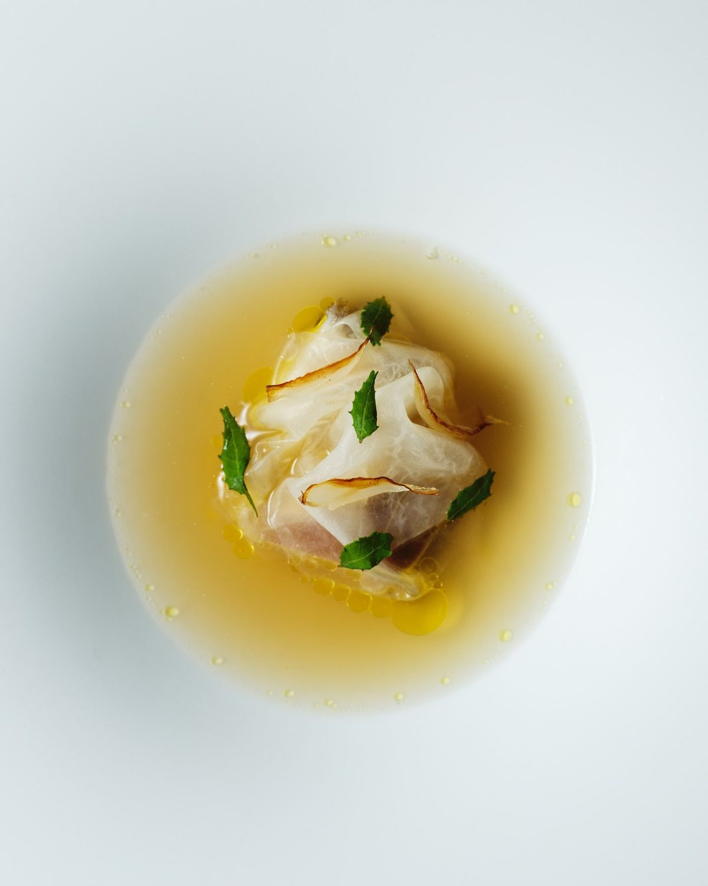
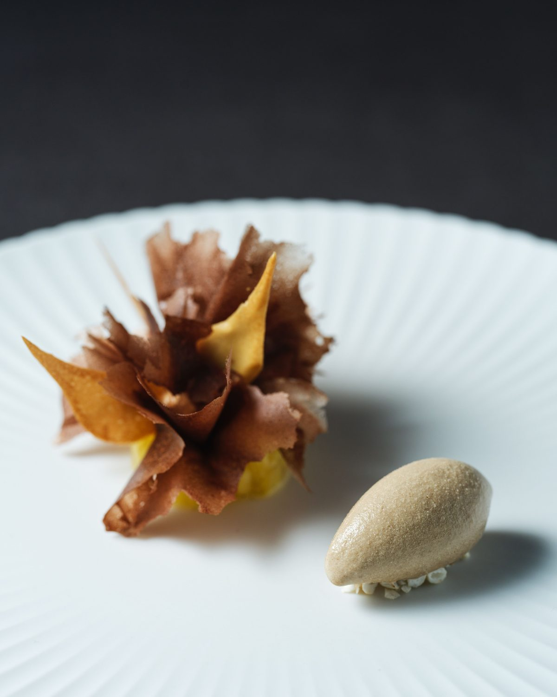
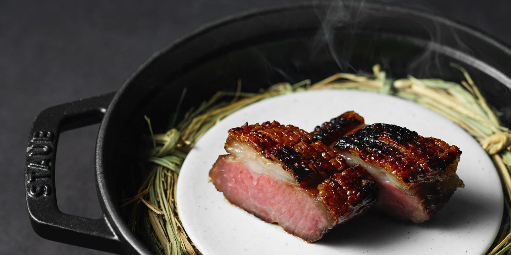

de nuit｜台北米其林一星法式餐廳
我們從夜出發。

Le passage
長廊
從信義路走進來，一道燈帶，
把白日留在外面。
de nuit
我們，從夜出發
de nuit，法文裡的「夜的」。台北信義路上，一道長廊之後，一個與白日分開的地方。
主廚古俊基出身香港，以法式的結構，書寫台灣的季節。
Signatures
有些菜，留下來





Nuits
過去的夜晚

2026・三月
Sola × de nuit
兩個晚上，巴黎 Sola 的 Chef Kosuke Nabeta 來到台北，與古俊基共寫一席。

2026
連續第六年・米其林一星
《臺灣米其林指南 2026》。同年入選 Tatler Best Taiwan 2026 Top 20。

2025・冬
DYCTEAM × de nuit
設計品牌 DYCTEAM 與 de nuit 的星級聯名。

2024
Tatler Off Menu・澳門
古俊基代表 de nuit，與亞洲十五位星級主廚及調酒師同台。
Reservation
訂位
午餐
週五・週六
11:30 – 15:00
最後入座 12:15
晚餐
週二至週六
18:00 – 22:30
最後入座 19:30
週日、週一公休
每月 1 日中午 12:00，開放當月及次月訂位。僅接受 inline 線上訂位；每組 1–6 位，12 歲以上。
訂位de nuit 為《臺灣米其林指南 2026》一星餐廳，自 2021 年起
Tatler Best Taiwan Top 20 · 2024 — 2026